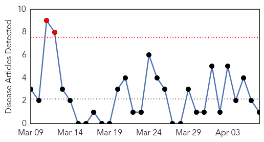
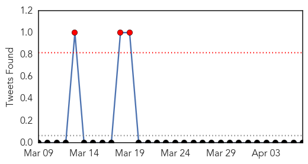
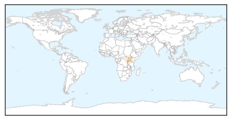

Cholera
30-Day Web Trend
2 alerts, 0 warnings

30-Day Twitter Trend
0 alerts, 0 warnings

Article Locations
Article Confidences

Top Articles:
Top Tweets:
-
No tweets found for Apr 07, 2014
Chikungunya
30-Day Web Trend
2 alerts, 0 warnings
30-Day Twitter Trend
1 alerts, 0 warnings

Article Locations

Article Confidences

Top Articles:
- 0.999
- Mosquito virus likely to strike TCI soon
- 0.995
- Leading virologists join together to address urgent viral threat
- 0.981
- Patients continue to arrive at hospitals with symptoms of chikungunya
- 0.975
- Global and regional rise of diseases spread by mosquitoes
- 0.967
- Caribbeans face threat from insect borne diseases
- 0.898
- Jamaica's Health Minister calls for Regional collaboration to tackle Chikungunya
Top Tweets:
-
No tweets found for Apr 07, 2014